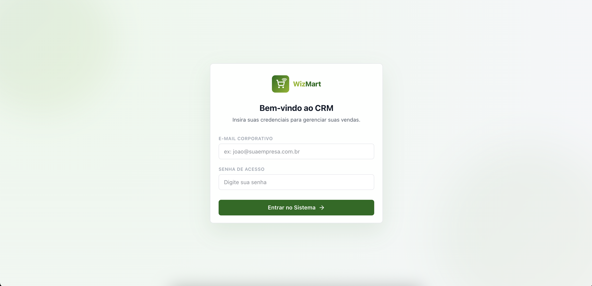
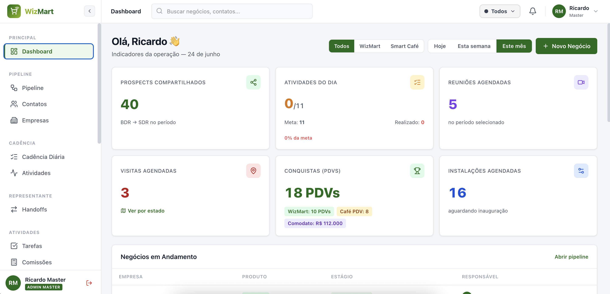
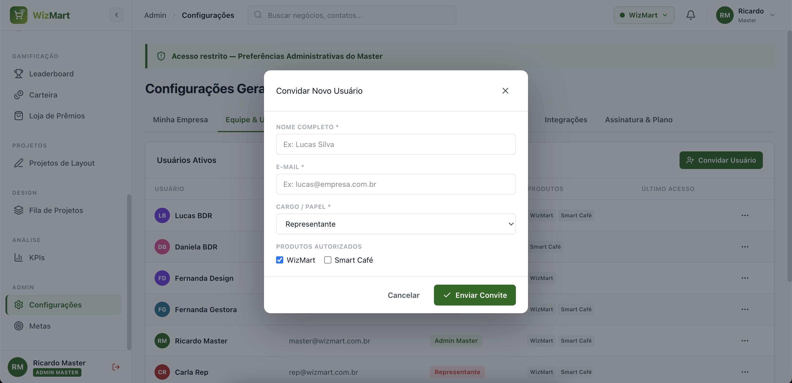
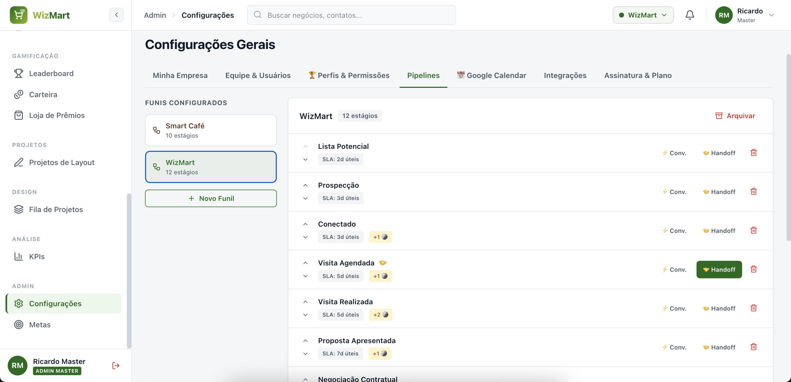
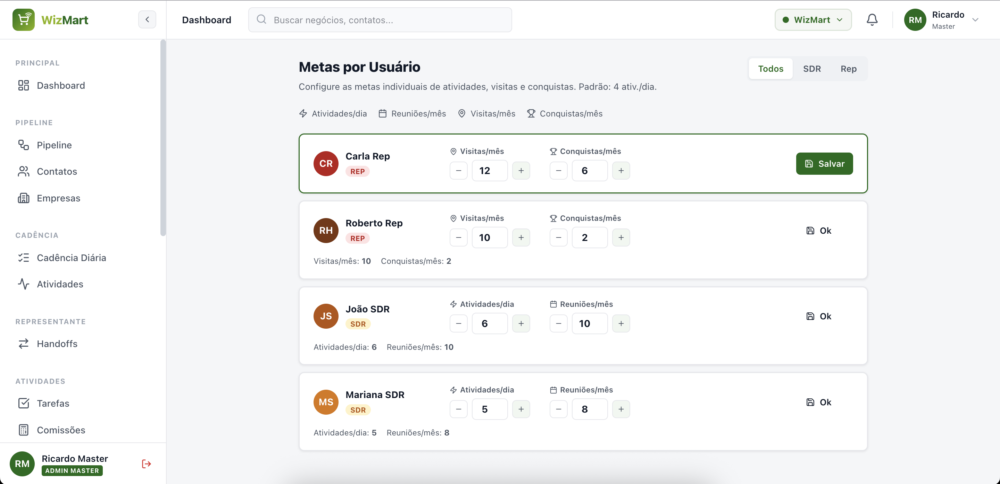
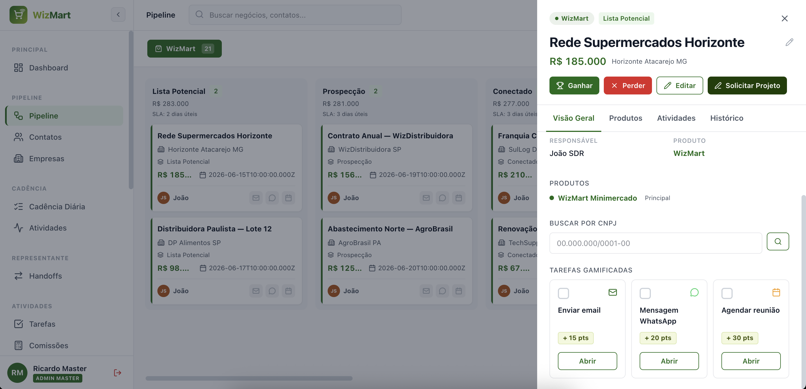
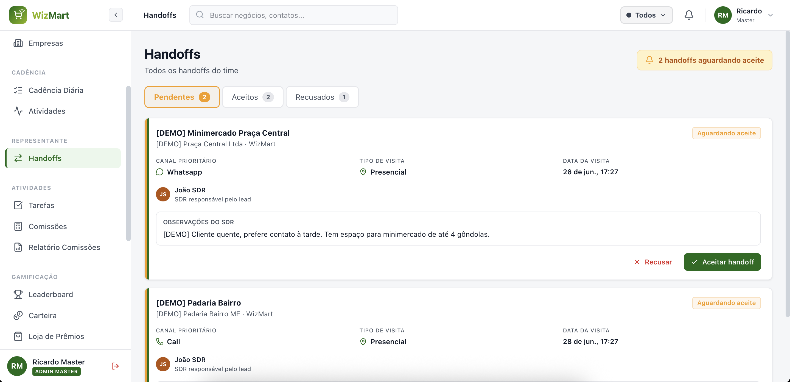
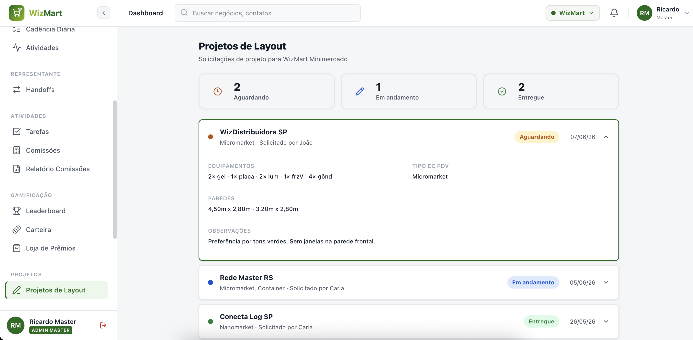

Bem-vindo ao WizMart CRM — o sistema que organiza toda a operação comercial do time: da prospecção do cliente até a inauguração do ponto de venda, passando por metas, comissões e premiações.
Este guia foi feito para o Administrador Master — o perfil com acesso total ao sistema. Aqui você encontra, em linguagem direta, o que cada tela faz e como usar passo a passo. Não é preciso conhecimento técnico: se você conhece a rotina comercial, vai se sentir em casa.
Cada seção tem um passo a passo numerado. As caixas verdes (Regra de negócio) explicam como o sistema calcula as coisas — especialmente as comissões. As molduras de tela mostram onde clicar.
O que você vai aprender
1Primeiro acesso (login)
O sistema funciona no navegador (Chrome, Edge ou Safari). Você acessa pelo endereço que a equipe técnica enviou.
- Abra o navegador e digite o endereço do sistema.
- Informe seu e-mail e senha.
- Clique em Entrar. Pronto — você verá o Painel principal.

Sua senha é pessoal. Como Administrador Master, você tem acesso a todas as informações da operação — não compartilhe seu acesso.
2Conhecendo a tela
A tela tem duas áreas principais:
- Menu lateral (esquerda): onde você navega entre as áreas — Painel, Pipeline, Comissões, Configurações, etc.
- Área central: mostra o conteúdo da área escolhida.
Como Administrador Master, você enxerga todos os itens do menu. Os outros perfis (BDR, SDR, Representante, Designer) veem apenas o que faz parte do trabalho deles.

3Painel (Dashboard)
É a primeira tela após o login. Reúne os indicadores do time em tempo real, para você acompanhar o desempenho sem precisar abrir cada negócio.
- Prospects compartilhados — quantos leads entraram no funil.
- Atividades — meta planejada x realizada (ligações, e-mails, visitas).
- Reuniões e visitas — agendadas e realizadas, com mapa por estado.
- Conquistas e instalações — pontos de venda inaugurados.

4Cadastrar e gerenciar usuários
É aqui que você adiciona pessoas ao sistema e define o que cada uma pode fazer. Acesse pelo menu → aba Usuários.
Adicionar um novo usuário
- Vá em Configurações → Usuários.
- Clique em Convidar Usuário.
- Preencha nome e e-mail.
- Escolha o Cargo / Papel: Master, Gerente, BDR, SDR, Representante, Designer ou Visualizador.
- Se o papel for SDR, escolha o Nível de Comissão: Junior, Pleno ou Senior (isso define o percentual dele).
- Marque os Produtos autorizados (WizMart, Smart Café ou ambos).
- Clique em Salvar.
O nível do SDR é fixo no cadastro e determina o percentual de comissão dele em todas as vendas: Junior 7,5% · Pleno 8,75% · Senior 10%. A calculadora de comissão usa esse nível automaticamente — você não precisa escolher na hora do cálculo.

Editar ou desativar alguém
Na lista de usuários, clique no usuário para editar (mudar papel, nível, produtos) ou desativar o acesso de quem saiu do time.
5Funis e estágios
O sistema tem dois funis de vendas, cada um com suas etapas:
- WizMart — da lista de potenciais até o ponto Inaugurado.
- Smart Café — com qualificação por porte do cliente, até a Instalação realizada.
Em → aba Pipelines você visualiza e ajusta as etapas de cada funil.
Um mesmo cliente pode receber produtos dos dois mundos. Qualquer pessoa do time pode adicionar um produto do outro funil dentro do card do negócio.

6Definir metas
Acesse no menu para definir os objetivos do time (faturamento, atividades, visitas). As metas alimentam o Painel e o Painel de TV, mostrando o quanto já foi atingido.
- Abra Metas no menu.
- Defina o valor da meta por período e por pessoa/produto.
- Clique em Salvar. O Painel passa a comparar meta x realizado.

7Acompanhar o Pipeline
O mostra todos os negócios em formato de quadro (kanban): cada coluna é uma etapa, cada cartão é um negócio. Arraste o cartão para mover de etapa.
- Abra o Pipeline no menu.
- Clique em um cartão para ver os detalhes do negócio.
- No detalhe, acompanhe contato, produto, atividades e o histórico (as "assinaturas" de quem trabalhou o negócio).
Cada negócio registra automaticamente quem o trabalhou: o BDR cria o card; ao passar para o SDR, fica registrado; ao passar para o Representante, idem. São essas assinaturas que definem entre quem a comissão será dividida.

8Cadência e Handoffs
Cadência diária (SDR)
É a lista de tarefas do dia de cada SDR (ligar, mandar e-mail, WhatsApp). Como Master, você consegue acompanhar o cumprimento da cadência do time.
Handoffs (passagem para o Representante)
Quando o SDR qualifica o cliente, ele faz o handoff: passa o negócio ao Representante, que aceita e dá sequência. A tela mostra essas passagens.

9Projetos de Layout
Quando um Minimercado é fechado, o time solicita o layout da loja ao Designer. Essas solicitações ficam em ; o Designer trabalha na em ordem de chegada.

10Comissões (calculadora)
O coração da gestão comercial. Em você registra o comissionamento de cada negócio. A tela já puxa o produto e as assinaturas do card; você só informa o faturamento.
Registrar uma comissão — passo a passo
- Abra Comissões no menu (ou clique em Calcular comissão dentro de um negócio ganho).
- Selecione o Negócio. O sistema mostra só os negócios ativados (inaugurados/instalados) e já preenche o produto e os responsáveis (BDR/SDR/Rep).
- Informe a data de ativação e o faturamento vendido no período.
- Se for avaliação antecipada (dia 10), mantenha "Pagamento proporcional" marcado e informe os dias decorridos.
- Para Máquina de Café, marque "Tabela de preços cheia" se for o caso. Para Comodato, marque "1ª fatura paga".
- Confira o resultado: gatilho atingido, divisão por pessoa, data de pagamento e parcelas.
- Clique em Registrar comissão.

Relatório de comissões
Em você acompanha tudo por ciclo de pagamento (dia 15) e por vendedor, muda o status (Projetada → Confirmada → Paga) e exporta em CSV para o financeiro.

11Regras de comissão
Estas são as regras que o sistema aplica automaticamente. Conhecê-las ajuda a conferir cada cálculo.
Percentuais por papel
| Papel | Percentual sobre o faturamento |
|---|---|
| BDR | 2% |
| SDR Junior | 7,5% |
| SDR Pleno | 8,75% |
| SDR Senior | 10% |
| Representante Comercial | 17,5% |
Gatilhos para começar a comissionar (primeiros 30 dias)
| Produto | Gatilho | Observação |
|---|---|---|
| WizMart Minimercado | vender a partir de R$ 3.000 | divisão padrão (BDR + SDR + Rep) |
| Venda Direta · Máquina de Snacks | vender a partir de R$ 2.000 | divisão padrão |
| Venda Direta · Máquina de Café | vender a partir de R$ 1.000 | exige tabela de preços cheia → regra dos 72% |
| Comodato | sem mínimo | exige 1ª fatura paga para liberar |
Quando a Máquina de Café vende a partir de R$ 1.000 com a tabela de preços cheia, paga-se 72% de comissão dos 30 primeiros dias, divididos assim: Representante 49% · SDR 21% · BDR 2%.
Para colocar dinheiro no bolso do time mais rápido: no dia 10 avalia-se a venda dos primeiros dias. O sistema projeta a venda de 30 dias assim: (valor vendido ÷ dias decorridos) × 30. Se a projeção ficar acima do gatilho, paga-se a comissão proporcional ao já vendido.
Exemplo: Minimercado inaugurado em 31/mai vendeu R$ 1.000 em 10 dias → projeção de R$ 3.000 (atinge o gatilho). Paga-se a comissão sobre os R$ 1.000 já vendidos = R$ 270 divididos entre BDR, SDR e Representante.
No comodato não há faturamento mínimo, mas a comissão só é liberada quando o cliente paga a 1ª fatura. O pagamento é parcelado com teto de R$ 5.000 por parcela.
Exemplo: comissão de R$ 23.000 → 4 parcelas de R$ 5.000 + 1 parcela de R$ 3.000. As parcelas podem se acumular com as de outros contratos a receber.
As comissões são pagas sempre no dia 15 (data diferente do salário fixo). Todo cliente inaugurado/instalado até o último dia do mês fica elegível para receber no dia 15 do mês seguinte. A avaliação acontece no dia 10.
12Gamificação e Loja
O sistema premia o engajamento do time com pontos e moedas:
- — ranking do time por pontos.
- — saldo de moedas de cada pessoa.
- — onde as moedas viram prêmios. Como Master, você cadastra os prêmios.
13Painel de TV
O Painel de TV mostra os indicadores numa tela grande (recepção, sala do time). Você gera um link e escolhe quais informações aparecem.
- Vá em KPIs → Gerar Link de TV Display.
- Dê um nome ao display (ex.: "Recepção").
- Marque as métricas que devem aparecer (metas, ganhos do dia, tarefas, rankings).
- Clique em Gerar e abra o link na TV.
A opção "financeiro real" mostra valores em R$ na tela. Em TVs públicas, deixe-a desmarcada e use apenas percentuais.
Para desativar um display, clique em Revogar ao lado do link. A TV correspondente para de mostrar dados na hora.
14Glossário
| Termo | O que significa |
|---|---|
| Card / Negócio | Um cliente em negociação dentro do funil. |
| Pipeline | O quadro com todos os negócios organizados por etapa. |
| Handoff | Passagem do negócio do SDR para o Representante. |
| Gatilho | Valor mínimo de venda que libera o pagamento da comissão. |
| Comodato | Modelo em que a máquina é cedida; comissão liberada após a 1ª fatura. |
| Assinaturas do card | Registro de quem trabalhou o negócio (BDR, SDR, Rep) — base da divisão da comissão. |
| Ciclo de pagamento | O mês de pagamento das comissões, sempre no dia 15. |